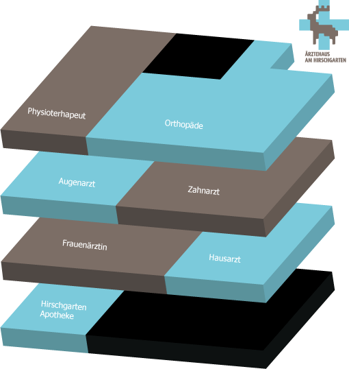

Ärztehaus am Hirschgarten
Haben Sie Schmerzen?
Fühlen Sie sich schwach und körperlich eingeschränkt?
Wollen Sie eine Vorsorgeuntersuchung machen oder sich einfach medizinischen Rat holen?
Dann sind Sie bei uns richtig.
Wir haben uns im Ärztehaus zusammengeschlossen,
um durch regelmäßigen Austausch fachlich auf der Höhe zu bleiben.
Und um Ihnen – im Fall des Falls – lange Wege von einer Praxis zur anderen zu ersparen.
Fachrichtungen
Dr. med. Christine Bach
Hausärztin
Tel.: 089/225225-10
Fax: 089/225225-17
bach@aerztehaus-am-hirschgarten.de
Spezielle Kenntnisse in Naturheilkunde,
Hausbesuche möglich, AOK-Hausarztprogramm, alle Kassen
Dr. med. Thomas Orban
Augenarzt
Tel.: 089/225225-20
Fax: 089/225225-27
orban@aerztehaus-am-hirschgarten.de
Konservative Augenheilkunde, Vorsorgeuntersuchungen,
Therapie altersbedingter Makuladegeneration
Dr. med. Guido Thoms
Orthopäde
Tel.: 089/225225-30
Fax: 089/225225-37
thoms@aerztehaus-am-hirschgarten.de
Krebsvorsorge, Schwangerschaftsbetreuung und Geburtshilfe,
pränatale Diagnostik
Dr. med. Irena Czisch
Frauenärztin
Tel.: 089/225225-40
Fax: 089/225225-47
czisch@aerztehaus-am-hirschgarten.de
Krebsvorsorge, Schwangerschaftsbetreuung und Geburtshilfe,
pränatale Diagnostik
Dr. med. Achmed Özal
Zahnarzt
Tel.: 089/225225-50
Fax: 089/225225-57
oezal@aerztehaus-am-hirschgarten.de
Prophylaxe, Paradontosebehandlung, schonende Füllungstherapie,
Implantate
Luis Waberer
Physiotherapeut
Tel.: 089/225225-60
Fax: 089/225225-67
waberer@aerztehaus-am-hirschgarten.de
Krankengymnastik, Manuelle Therapie, Lymphdrainage,
Massagen
Annette Wilhelm-Meissner
Apothekerin
Tel.: 089/225225-70
Fax: 089/225225-77
apotheke@aerztehaus-am-hirschgarten.de
Allgemeinpharmazie, Beratung und Information, Pflege und Kosmetik,
Giftnotruf
Kontakt
Ärztehaus am Hirschgarten
Eisnergutbogen 37
80639 München
Kern-Sprechzeiten:
Mo–Fr 9–12 Uhr und 15–18 Uhr
Selbstverständlich können Sie mit jedem von uns
eigene Termine vereinbaren.
Sprechen Sie uns an!
Telefon: 089/22522-40
Notdienst-Telefon: 089/22522-50
Etagenplan
Impressum
Dr. med. Christine Bach, Ärztehaus am Hirschgarten,
Eisnergutbogen 37, 80639 München,
Tel.: 089/225225-10,
bach@aerztehaus-am-hirschgarten.de
Inhaltlich Verantwortliche gemäß § 55 Abs. 2 RStV:
Dr. med. Christine Bach